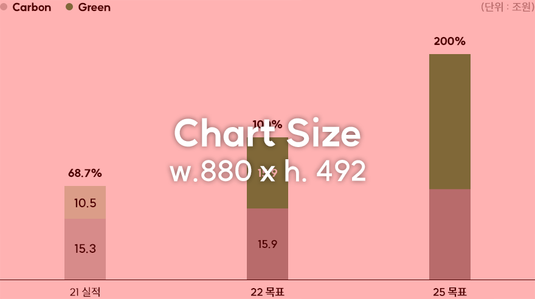
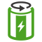

1. Expanding Green Portfolio
Business portfolio innovation: Double the ratio of green assets against the Hydrocarbon assets
SK innovation intends to maximize corporate value by increasing the ratio of the green portfolio compared to traditional hydrocarbon values through strengthening battery-oriented green portfolio (Green Anchoring) and the transformation (Green Transformation) of the existing hydrocarbon business to green business model until 2025.
Carbon to Green ratio
(Units: KRW 1 Trillion)

Strategy
"Green Energy & Materials Co."
Green
Anchoring
+
Anchoring
Investment in batteries and LiBS wordwide, making profits in BMR business

Green
Transformation
Transformation
Accelerating the transformation to green business model based on the expansion of recycling plastic and fuel cells business